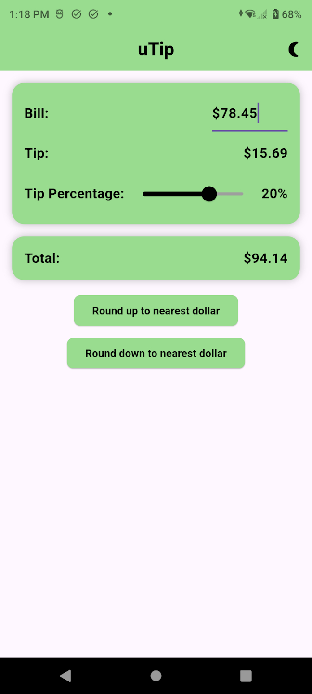

The Product
A simple, ad-free Android tip calculator built to make a small everyday task quick and distraction-free.
Product Case Study · Retrospective
Tipping can be a chore. Let’s make it simple.
uTip is a shipped, ad-free Android tip calculator. I revisited the product after launch to challenge the assumptions I originally built it on and practice a more evidence-first approach to Product Management.

Recruiter Snapshot
A simple, ad-free Android tip calculator built to make a small everyday task quick and distraction-free.
Was I solving the right problem—or had I jumped from my own frustration straight to a solution?
Shipped the app, then conducted 3 user interviews, synthesized patterns, reframed the problem, and evaluated tradeoffs.
The app shipped successfully. The bigger outcome was learning to move from solution-first thinking toward evidence-first product decisions.
The Starting Point
uTip started with a problem I experienced personally: tipping tools often felt more complicated than the task required. I wanted to enter a bill, choose a tip, see the total, and move on—so I built exactly that.
Original Assumption
People who want to calculate a tip quickly may value simplicity and an ad-free experience more than a large set of features.
What I Didn’t Know
Whether my frustration represented a meaningful problem for other people—and whether the real friction was the calculator at all.
“The opportunity for uTip wasn’t necessarily to do more. It might be to help someone accomplish one small task with as little friction as possible.”
Discovery
I spoke with people who handle tipping differently. With a small sample, I treat these as early patterns—not broad conclusions.
Participant 1
Often hands the tipping decision to their spouse and described the task as stressful.
“It’s not simple and I hate doing it.”
Participant 2
Uses a calculator, then manually adjusts the amount to reach a cleaner final total—especially while feeling rushed.
“I just wish I could round up or down quicker.”
Participant 3
Often chooses an approximate dollar amount rather than doing exact math because they want the task finished quickly.
“I just write down a number half the time.”
Pattern 01
The friction appeared before the calculator: deciding, calculating, and finishing the transaction all required effort.
Pattern 02
Some participants preferred a fast, reasonable answer over precise percentage calculation.
Pattern 03
One participant naturally worked toward a clean final total, giving early—not universal—support for uTip’s rounding controls.
The Shift
Before Research
“How can I build a simpler tip calculator?”
After Research
“How can I reduce the effort it takes someone to decide on a tip and reach a final total?”
The problem was broader than the tool. Stress, time pressure, mental math, and the desire to simply finish the transaction were part of the experience too.
Tradeoffs
I compared opportunities using the evidence I had, expected user value, implementation effort, and confidence. With only three interviews, I kept confidence intentionally conservative.
| Opportunity | Value | Effort | Confidence | Decision |
|---|---|---|---|---|
| Quick Tip Presets | High | Low | Medium | Would test first |
| Make Round Up / Down more prominent | Medium | Low | Low–Medium | Would test next |
| Remember previous percentage | Medium | Low | Low | Would defer |
| Advanced feature expansion | Unknown | Med–High | Low | Would not pursue |
“The goal is not to make uTip capable of doing more. The goal is to make the job it already does easier.”
Shipped Experience
The shipped app lets someone enter a bill, adjust the tip percentage, see the tip and total immediately, and round up or down—without ads, accounts, or additional screens.
The app reached the core functional goal and shipped as a real Android product.
I had not defined formal success metrics or done structured discovery before launch.
The original version started with my solution. Revisiting it showed me why my next product should start with evidence.
Measurement
These are proposed success measures—not results from the shipped version. I would define them before the next product decision, not after.
Primary Signal
Does the experience help someone reach the desired tip and total faster?
Supporting Signal
Can someone complete the task correctly without assistance?
Supporting Signal
How many taps or adjustments does the same task require?
Reflection
01
A personal frustration can inspire an idea. Research helps determine whether the problem extends beyond me.
02
Fewer features do not automatically create a simpler experience if the user still has to think too hard.
03
Technical possibility is not evidence of value. Prioritization includes deciding what not to build.
04
A shipped feature proves it was built—not necessarily that the user experience improved.
“My technical ability helps me build quickly. Product thinking helps me decide when building is actually the right next step.”
Biggest Takeaway
Then
Idea → Build → Ship → Learn
Now
Problem → Evidence → Opportunity → Decision → Test → Build → Measure → Learn
uTip proved I could turn an idea into a real product. Revisiting it taught me something more important: building is only part of Product Management. The real work is understanding what deserves to be built and why.
“That shift—from defending my solution to being willing to challenge it—is one of the biggest lessons I’m taking forward as a Product Manager.”
Want the detail?
This page intentionally focuses on the decisions and insights a recruiter or hiring manager can scan quickly. The PDF contains the full research notes, opportunity analysis, and retrospective.